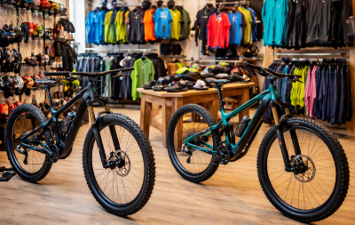

ABOUT ME
Hi, I’m Susana, a data analyst with strong knowledge in SQL, Tableau,
Python, Power BI, and Excel. I enjoy working with data to clean, organize,
analyze, and visualize information, turning raw data into clear insights.
I’m continuously learning and building projects to strengthen my analytical
skills and grow as a data professional.
DOWNLOAD CV
Analyzing HR data through an interactive dashboard, highlighting.
The project includes data modeling, calculated metrics, and allows filtering by termination type
and provides insights by department and over time to support HR decision-making.
Raw data was cleaned and processed using Pandas,
followed by data visualization with Matplotlib. The project explores the relationship
between roller coaster height and speed, and analyzes the number of roller coasters opened
per year through graphical analysis.

Built a Data Warehouse using retail sales data from a bicycle shop, where raw transactional data was cleaned, transformed, and organized to support business analysis.
Used Excel as the data source, where the data was cleaned, organized,
and analyzed to build interactive dashboards and visualize key trends and metrics,
including averages, percentages, time-based patterns, and geographic distribution.